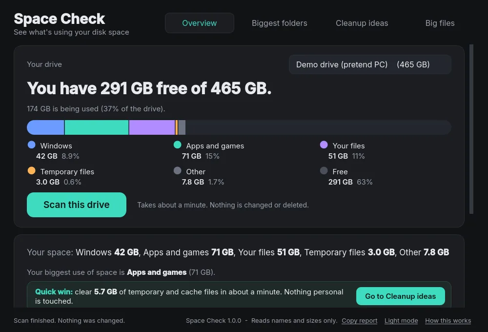
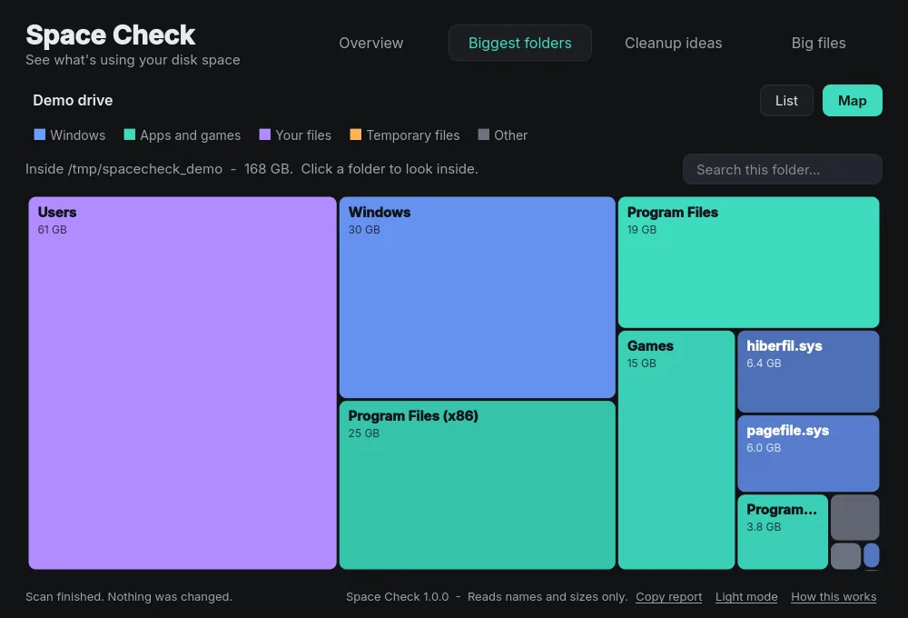
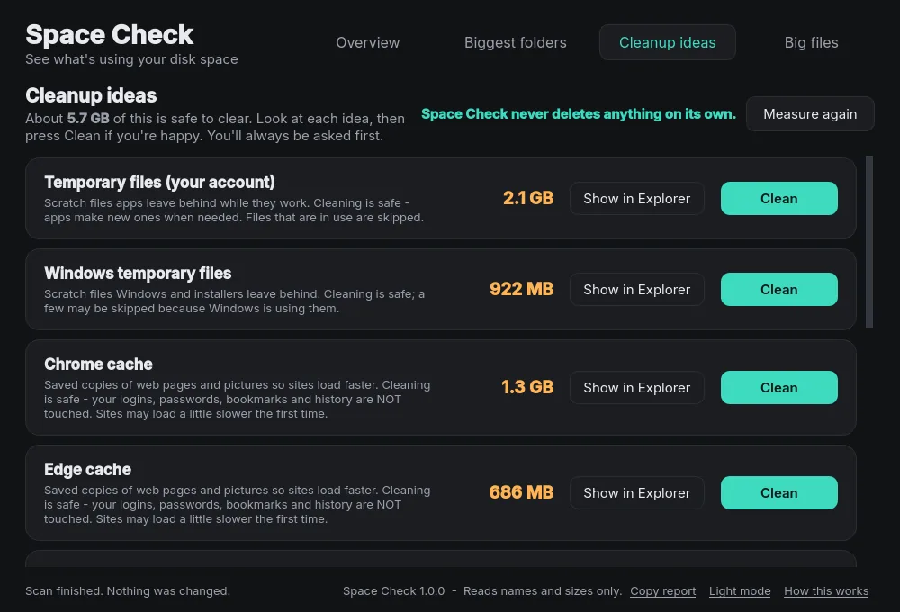
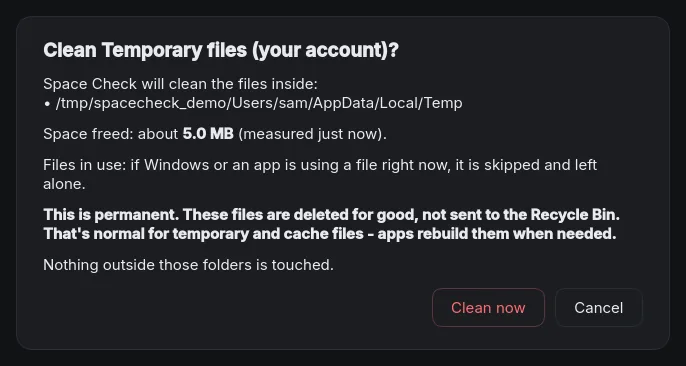
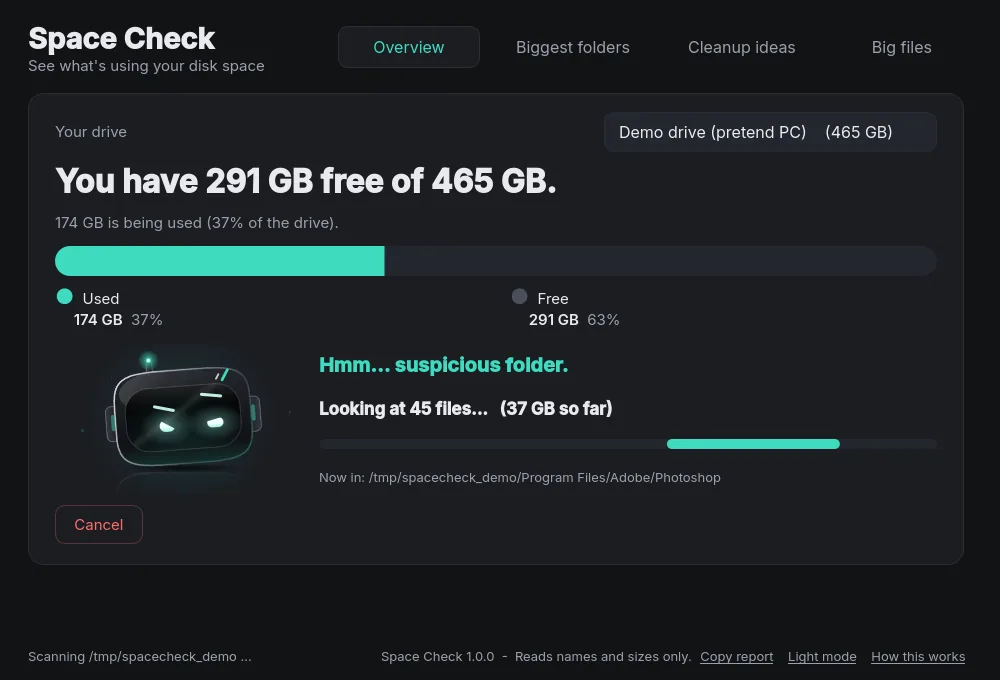
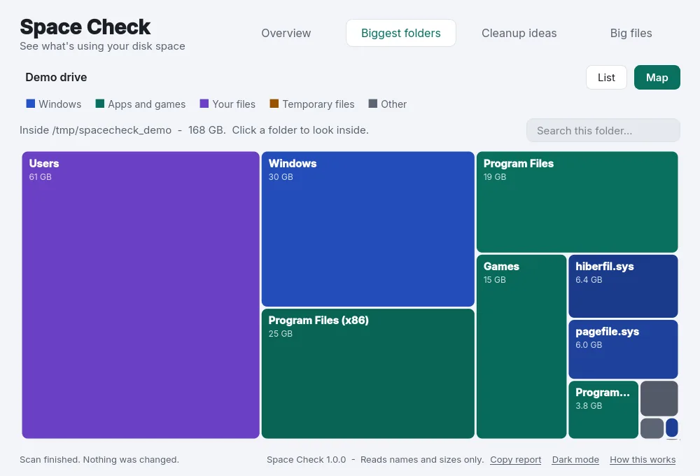

Space Check
A disk-space viewer for people who aren't computer experts. It scans your drive, shows the biggest folders as a list or a map, explains well-known folders in plain English, and never deletes anything unless you click a cleanup and confirm.






Features
- An overview of how much of the drive is free, with a coloured bar for Windows, apps and games, your files and temporary files
- Biggest folders as a list or a map, with a search box that filters as you type
- Plain-English tags on dozens of well-known folders and files, from AppData and WinSxS to node_modules, pagefile.sys and Steam: leave it, be careful, can usually be cleaned, safe to ignore, or your stuff
- Cleanup ideas: a short, fixed list of browser caches, temporary files, crash reports and thumbnails, each one asking before it does anything
- A big files list that is look-only, with no delete buttons
- Scan history that shows what grew, an Export button (CSV and a text summary) and a Copy report button for bug reports
- A small scanning mascot, a dark theme by default and a light theme switch
- Free and open source (MIT)
System requirements
- Windows 10 or 11 (64-bit)
- No internet connection needed: Space Check never uploads anything
Install
- Download the latest
.zipfrom the Releases page. - Right-click it, choose Extract All, and pick a folder.
- Open the folder and run
SpaceCheck.exe. - If Windows SmartScreen appears, click More info then Run anyway.
Notes: Space Check only reads file and folder names and sizes, never what's inside your files. It never deletes anything on its own: the Clean buttons cover only a short fixed list of cache and temporary folders, and your Documents, Desktop, Pictures, Downloads, Videos and Music are never cleaned. Builds are not code-signed yet, so Windows may warn you the first time. It has only been tested in a limited way so far, so please report any problems on GitHub. To uninstall, just delete the folder (and %LOCALAPPDATA%\SpaceCheck if you want to forget your settings and scan history).